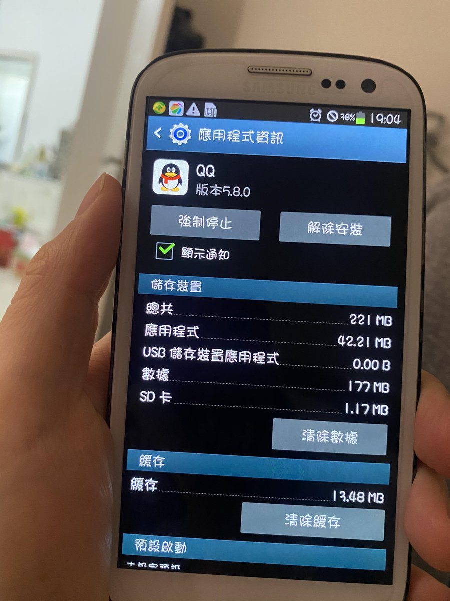
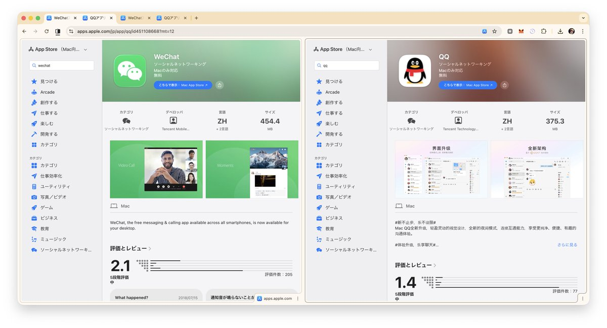
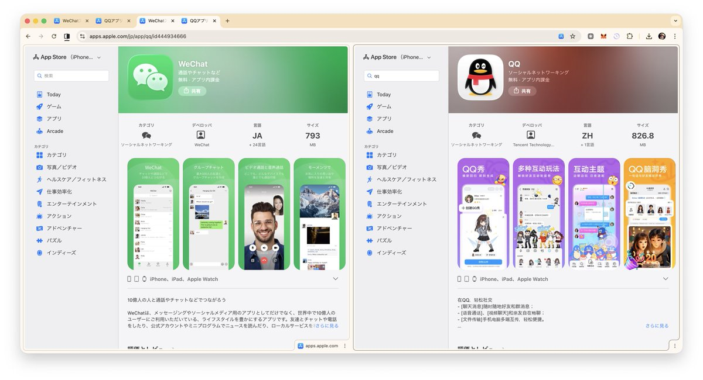

奶昔🥤
@realNyarime
@kitayoshi_son 就这么说吧，当年的QQ也才43MB而已



奶昔🥤
@realNyarime
以前三星的设置界面，很独特，很有个性，很好看 https://t.co/UjwuTyyC00
Kitayoshi
@kitayoshi_son
我之前一直有个朴素的误解是：QQ 要比微信的客户端无论大小还是功能都臃肿很多，比如「塞下了完整的虚幻引擎」之类的梗。
这次偶然发现 iOS 微信（793MB）早就追上了 QQ（826MB），甚至 macOS 微信（454MB）已经超越了 QQ（375MB）。这到底是塞了啥… https://t.co/wi7CXy4HLw